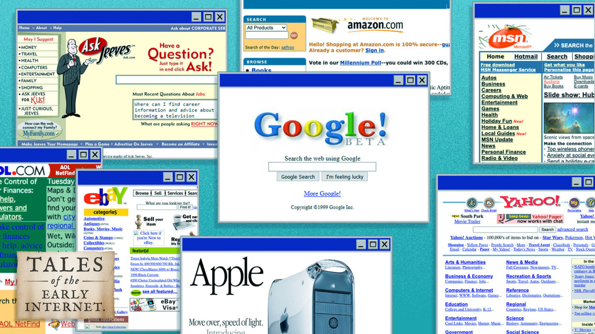
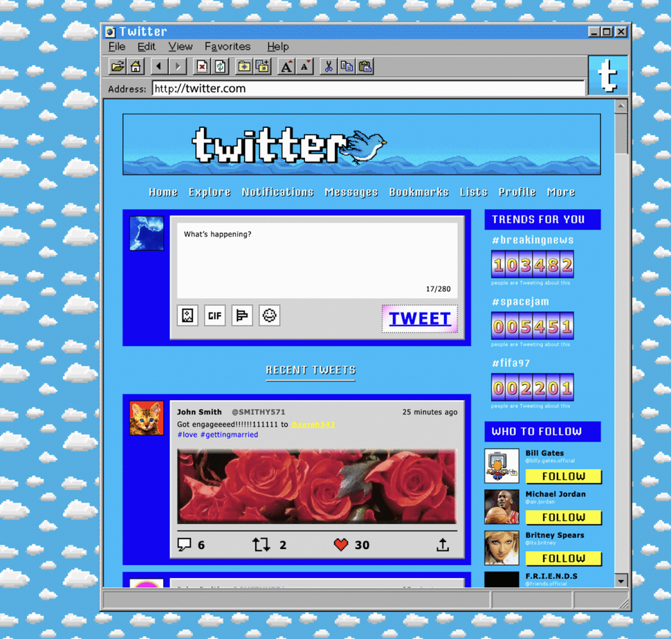
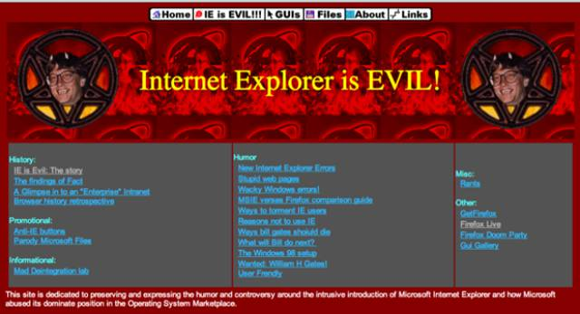
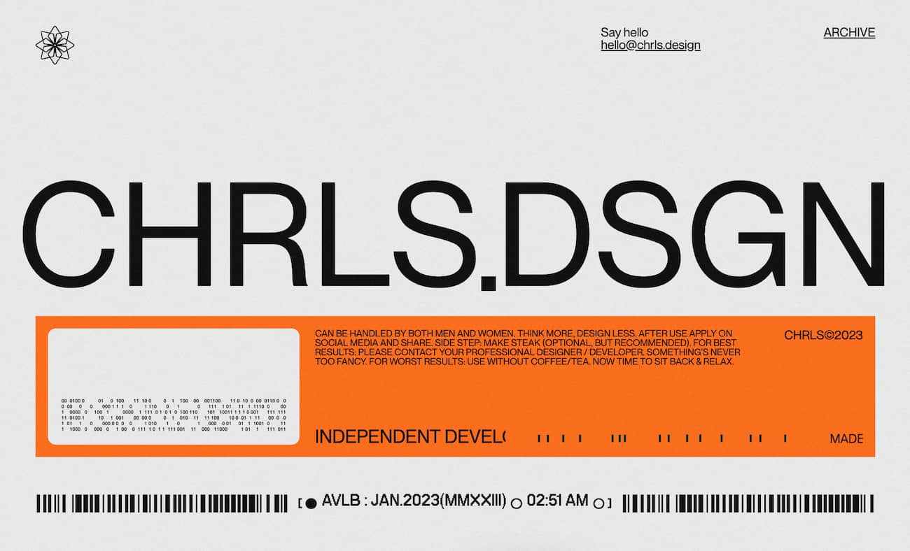

SYSTEM_PHILOSOPHY_00
philosophy.pla
This system is a deliberate throwback: a UI that feels like switching on a CRT monitor and watching an old machine come to life. The goal isn’t “vintage for vintage’s sake”—it’s a disciplined, repeatable spec that stays readable even under scanlines, flicker, and noise.
guiding_philosophy.gde
Everything is tuned like a signal chain: you don’t add knobs unless you can explain what they control. Tokens keep the knobs labeled, and each foundation page documents the rules, the demo, and the CSS implementation.
| principle | what it means in practice |
|---|---|
| legibility first | large base text, strong contrast, short line lengths; effects must never destroy readability |
| consistency by tokens | use :root variables for colour, spacing, breakpoints, layers, and type scale |
| hardware vibe | panels, labels, and glyphs feel like a device front-panel, not a glossy app |
| few rules, repeated | small set of ratios, a single grid, a single spacing cadence, a known layer stack |
| documentation as UI | each page shows “what”, “why”, and “how” (table + demo + CSS snippet) |
effects_as_language.crt
The CRT filter isn’t decoration—it’s a narrative device. Scanlines and flicker suggest analog hardware; the moving scanline reads like a refresh pass; subtle colour split evokes phosphor bloom. Effects are intentionally toggleable so the system can switch from “vibe” to “reading mode.”
| effect | does | why |
|---|---|---|
| scanlines | horizontal banding overlay | recalls CRT phosphor rows; immediately signals the era |
| flicker | subtle opacity noise | adds “alive” screen feel without changing layout |
| scanline sweep | moving line across viewport | reads like a refresh/boot diagnostic pass |
| text shadow | colour split around text | mimics signal bleed; boosts retro identity |
| slowload blackbox | blackbox that blocks visibility for a second | resembles when computer diodes had to slowly load in |
xp_boot_vibe.mbr
The interaction mood is inspired by powering up an early-2000s PC (Windows XP era): clear status states, patient transitions, and interface elements that feel like physical controls. The “boot” idea shows up as: a sequence-like layout rhythm, measured headings, and effects that imply a screen waking up.
| cue | how it shows up here |
|---|---|
| startup hierarchy | big titles, clear section headers, calm body text—like boot messages and control panels |
| diagnostic clarity | tables, tokens, and specs are formatted like logs/manuals (repeatable and scan-friendly) |
| signal/inputs | icons and labels behave like hardware glyphs: minimal, consistent, and functional |
foundations_map.map
Each foundation page describes a single part of the system. Together they form a complete, remixable “kit” with consistent rails, scales, and labels.
| page | what it explains | what to look for |
|---|---|---|
| grid_system.mnl | columns, gutters, margins, content width | annotated overlay + grid measurements + CSS implementation |
| spacing_scale.maa | spacing cadence and tokens | scale swatches + component padding demo |
| breakpoints.log | responsive ranges and layout rails | breakpoint ruler + implementation snippet |
| layer_stack.str | depth rules and z-index tokens | stack demo (base/content/elevated/overlay) |
| colour_palette.sig | colour roles and combinations | role swatches + usage combos + token snippet |
| typography_specimen.typ | font pairing and type scale | tables + token-driven scale + CSS implementation |
| image_ratios.fra | aspect ratio roles | safe-area ratio frames + implementation snippet |
| icon_library.sym | sprite-based glyph library | full sprite preview + sizing table + examples |
documentation_approach.doc
Documentation is written like a manual: short paragraphs, labeled tables, and “image-like” demos. Every rule is intended to be implementable—not just aesthetic.
| section type | purpose |
|---|---|
| tables | clear, searchable specs (values, roles, and constraints) |
| demos | visual proof of the rule (overlays, swatches, rulers, stacks) |
| css_implementation | copy-paste scaffolding that ties back to :root tokens |
references.ref
Primary references for the system’s voice and materials. Links are listed as plain text inside a code block for easy copy.
IBM Plex Mono (type family)
[IMG_001]

[IMG_002]

[IMG_003]

[IMG_004]
[IMG_005]
